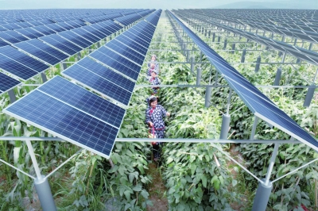

农业“嫁接”光伏，结什么果？

图为中利万农光伏蔬菜基地人员正在采摘。顾镇摄
光、电、农，三者之间有着怎样的联系？光合作用与光电效应，一组分别来自生物学和物理学的基本概念，在以其为主要原理衍生出的产业层面上，有了一种新奇的碰撞和结合——光伏农业，即在一块土地上同时实现太阳能发电与高效设施农业生产。
光伏发电为何，以及如何与农业走到一起？“农业+光伏”后，农业会变成什么模样，光伏发电又会走向何方？一段时间来，记者持续关注光伏农业发展，并走访调查中利腾晖光伏科技有限公司的中利万农“智能光伏+科技农业”项目等，试图找到这些问题的答案。
无论是理论层面上，还是目前的实践探索中，光伏与农业的“嫁接”都已被论证和印证是一次前景广阔的产业融合——
全新一代农光互补：一项探索破解两个瓶颈
阳澄湖畔的沙家浜镇，河浜纵横，芦苇丛生，丰富的水产资源造就了这里发达的渔业。在沙家浜的江苏常熟现代渔业产业园核心区，有240亩“熠熠发光”的鱼塘显得别具一格：鱼塘中矗立着一排排铝合金支架，在塘面上架起4万多块多晶硅太阳能光伏板；光伏板遮挡下的鱼塘里，大闸蟹、龙虾、中华鳖、塘鳢鱼等特种水产都有着不错的长势。
水上发电、水下养殖，综合利用土地和太阳能资源——这是中利腾晖在2011年开发的国内首个“渔光互补”光伏农业项目，在鱼塘和芦苇荡滩众多的苏南地区，这样的探索含金量十足。
渔光互补、林光互补，以及农业大棚光伏项目，在光伏业内被统称为“光伏农业”。无论是理论层面上，还是目前的实践探索中，此类光伏与农业的“嫁接”都已被论证和印证是一次前景广阔的产业融合。
与这片鱼塘相隔不远处，中利腾晖进行了另一场更大胆、更具革命性的全新一代“农光互补”实验：一片经过改造的荒地上，将光伏支架整体提高，支架桩间距加宽，分别达到4米和10米以上，同时采用独特的单光伏板安装工艺，既能充分实现机械化作业，又满足农作物75%以上的太阳光照射需要。10月15日，江苏省农业科技专家对中利万农26亩光伏稻田的测产结果显示，该地块亩均产水稻583.2公斤，与常规水稻产量相当。
“这项实验的成功，使光伏农业向前迈进了一大步，光伏产业和现代农业当前面临的很多难题会迎刃而解。”中利科技集团股份有限公司董事长王柏兴将这场实验命名为中利万农“智能光伏+科技农业”项目，而他所说的难题，是包括在东部建分布式光伏电站的土地瓶颈、现代农业设施投入大等在内的一系列问题。
对于占地面积较大的传统光伏电站而言，光照强烈的西部贫瘠的荒漠化土地无疑是一片“沃土”。但西部地区远离电力负荷中心，电力输送成本高，所导致的弃光限电问题一直无法很好地解决。在东部地区建造光伏电站，电力消纳问题可以得到解决，但荒滩土地资源稀缺又成为制约光伏产业发展的瓶颈。如果找不到突破口，光伏产业将陷入“东西两难”境地。
对农业的现代化来说，生物防控、水肥一体化、全程机械化等技术的集成已相对成型，但在高效农业设施投入方面，仅靠财政力量尚不够，还需要社会资本的投入。过去几年，考虑到光伏发电和农业生产在土地利用上的兼容和互补，光伏产业内一直在寻找二者的结合点。
“从长远来看，发展光伏农业对于我国的农业转型具有重要意义，从短期来看，光伏农业在一定程度上是解决目前光伏产业困境的有效措施。”中国可再生能源学会理事长石定寰认为。
目前，如渔光互补、林光互补，以及“棚内种菜、棚顶发电”的光伏农业大棚等，已在多地投入应用。而在所有光伏农业模式探索中，“农光互补”模式被寄予的期望最高。
“通过科学合理地抬高光伏支架或采用柔性光伏支架的办法，把农业种植与光伏发电结合在一起。”中国能源经济研究院研究员红炜所定义的“农光互补”，正是中利万农“智能光伏+科技农业”项目正在做的。区别于其他模式，这一全新一代农光互补技术的突破，可以为光伏农业提供最广阔的可能空间。
“目前，在东部地区，我们主要还是通过改良荒滩荒地建设万农生态光伏项目，种植稻麦作物。事实上，通过抬高光伏板，合理安装单板组件，完全可以做到至少不影响农作物生长，不妨碍一般农机具的田间操作。”王柏兴对中利万农公司的专利项目十分自信。
当然，受基本农田保护政策制约，中利万农还无法完全放开手脚进行全新一代的“农光互补”实验。电与庄稼最后的收成已经得到初步验证，大面积应用的成效还需政策放宽，在东部农田上建设一定数量的光伏+大农业的试点项目，才能给出一个清晰的回答。从目前的探索实践来看，中利的实践或许可以为现代农业趟出一条新路子，为光伏产业找到一个新出口。
光伏农业在一块土地上实现两份收入，社会资本投入建起现代化农业——
农业+光伏：为土地增值为农民增收为扶贫助力
产业的融合，或许能幸运地得到“1+1＞2”的结果，但同样存在“1+1＜2”，甚至“1+1＜1”的可能。农业“嫁接”光伏，又会结出什么样的果实呢？
农为国本。对任何关系到农业，尤其是农地和农民利益的探索，都应采取最谨慎的态度来评价它。在走访和调查光伏农业项目时，记者最关心的问题是：光伏发电会不会与农业争地，与农民争利？
“占了我家农田后，只建光伏电站，不种地了可咋办？”就“农光互补”光伏农业，记者采访到的部分农民普遍担心自己的土地被变相撂荒。
光伏企业作为主体经营光伏农业，更倾向于光伏，还是更看重农业，取决于二者的收益比较。在中国光伏农业工作委员会会长张勇看来，现代农业经营的收益未必比光伏发电低。“光伏发电的收益取决于太阳能光伏板的铺设面积，相对而言较稳定；农业生产的收益则取决于经营和管理水平，选择适合光伏农业的产品，引进设施农业、高效农业，那么农业收益将大于光伏收益。”
中利腾晖光伏科技有限公司副总裁倪志春参照行业平均水平，向记者算了一笔收入账：一个装机容量100兆瓦的光伏电站，约需要铺设3000亩地，年利润约为4000万元，亩均光伏发电利润为1.3万元，与蔬菜种植的亩均利润相当，如种植花卉、中草药等农业收益会更高。很显然，光伏农业不会走向“有钱不赚”的非农化。
在中利万农的实验基地，记者看到了“嫁接”光伏后的农业是怎样一番模样：光伏顶架上放置太阳能杀虫灯、自动喷淋、喷雾器、生物杀虫板等绿色高效农业设施；太阳能扬水灌溉系统、电动化农机设备可以就地获得充足的电能，农业用电实现“自给自足”……
更重要的是，光伏农业大大提高了单位面积土地产出率，为一块土地带来了两份收入的可能：按照中利万农“智能光伏+科技农业”的实践，农业企业流转土地，建成光伏农田，吸纳有劳动能力的农民转为有保障的农业工人，贫困农户可以土地入股享受分红。对于有意继续种田的农民，则由农业企业统一配套现代农业设施后免费提供给农民。目前，中利腾晖公司正在全国多地贫困村推动建设村级扶贫电站、光伏农场，国务院扶贫办已认可该“收益性”精准扶贫模式。不久前，该公司已与17个贫困县签署《全县贫困村光伏+农业扶贫协议》。
探索一条与现代农业相结合的新路子，光伏产业迎着太阳继续阔步向前——
光伏+农业：优化的选择深度的融合产业的升级
在众多新能源产业中，光伏发电被认为是最具前景的能源利用形式之一。过去10余年间，我国光伏产业经历了从无到有，从有到世界第一的典型“中国式”发展；过去5年，我国光伏电站建设以更快的速度“复刻”了同样的历程。
但是，在过去两年里，情况有了变化：光伏发电不再理所应当地超预期发展，而总是出人意料地低于规划目标。“在西部大规模建设光伏电站的时代已经过去了。”王柏兴意识到，只有探索出一条与现代农业相结合的新路子，光伏产业才能继续迈步向前。
西部地区普遍光照充足、可利用土地资源丰富，是光伏发电的优势地带。但将电力由西部地区大规模、远距离地输送至东部电力负载中心，能源地与消费市场间的距离鸿沟带来光电并网消纳问题一时难以解开，其结果是：与农业上“倒奶杀牛”颇有几分相似的弃光限电现象越来越严重。
在东部电力负载中心地区建设光伏电站，固然可以解决“如何用电”问题，但有限的土地资源约束下，“建在哪里”又成了新的产业瓶颈。正因为如此，不与农业争地的光伏农业被寄予厚望。
“农业可成为光伏产业发展的重要‘救命稻草’，光伏和农业应做成一对‘完美婚姻’。”去年，由中国光伏农业工作委员会举办的光伏投资研讨年会上，农业部国际合作司原司长冯玉林表示。
市场“无形之手”已决定西部光伏发电的无效率。“在东部建光伏农业项目，光伏发电并网瓶颈打破，盈利能力增强，同时与现代农业相结合，将弱盈利项目变为强盈利项目，不仅不再需要国家补贴，而且可以为每亩地创造年均过万元的税收。”王柏兴说。
从整个能源产业格局来看，光伏农业的发展也有助于加速新能源对常规能源的替代，大幅实现节能减排。倪志春为记者算了另外一笔环保账：按1GW装机容量项目计算，光伏发电每年可输出约1.75亿万度的绿色电能，相当于少烧了55万吨标准煤，可减少二氧化碳年排放量约140万吨，减少烟尘排放5800吨。
当然，推动现代农业加速实现、精准扶贫助力农民致富、突破光伏产业发展瓶颈、实现清洁能源革命……所有的一切都要基于一个前提：光伏与农业深度、有机地结合。从这一点上来说，中利万农这场“智能光伏+科技农业”的革命性实验值得期待！